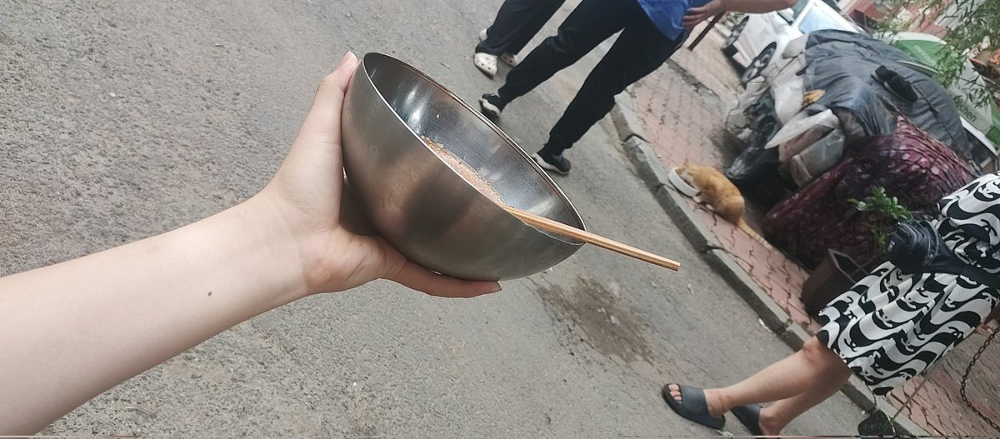

猫屎bot
@wind_dmr
@creeperwhite2 冷面看上去很好吃了

蓟野菁菁
@creeperwhite2
后现代小保觉得自己挂网上复读汉族崛起爱猫tv和反lgbt就能和劳保坐一桌
但实际上:劳保夏天出门吹风念佛喂哈基米
跨性别端一大盆冷面跟他们坐一桌还给对门的年轻孕妇煮个鸡蛋
小保只出现在旁边纹身外卖大哥的吐槽里
"这帮小b崽子成天窝屋里打电脑,饿了也不做饭净点外卖,疫情时候把我坑惨了" https://t.co/jPEVtxCJxh